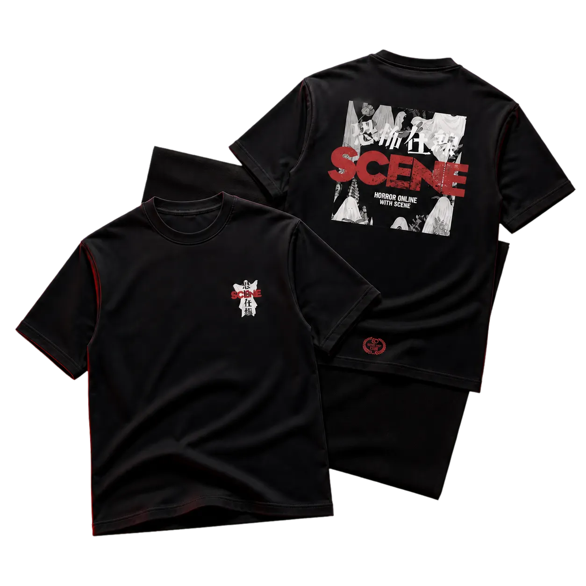
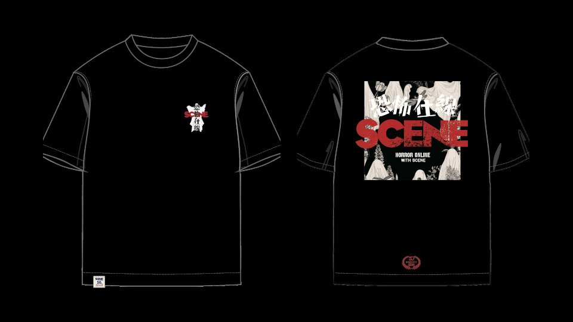
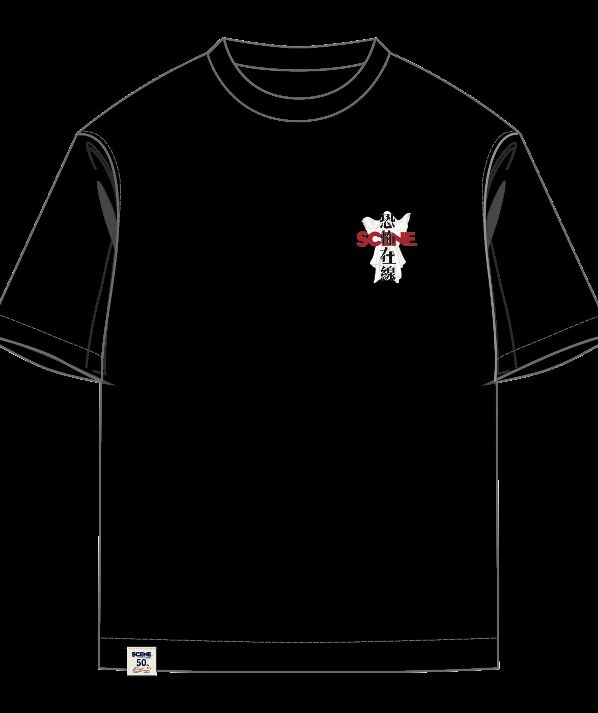

SCENE × Horror Online · Brand crossover
One crossover, one connected launch.
I translated a business collaboration into one coherent physical and digital release — aligning partners, merchandise, packaging and the purchase journey without flattening either brand's identity.
Explore the screen-flow library
The assignment
This was a commercial crossover, not a research-led product discovery exercise. The work was to turn an agreed collaboration into a launchable system: make both brands legible, coordinate what each party needed, prepare physical applications for production and give customers one clear route from story to cart.
How do two distinct brands feel intentionally joined across every touchpoint — instead of looking like separate assets placed side by side?
Visit the live collection →My responsibility
Run the crossover as one workstream
I treated the launch as a dependency map rather than a collection of isolated design jobs. Partner approvals, artwork handoff, product applications, packaging content, website assets, product options and launch checks had to move in the right order so that one late decision would not create inconsistencies downstream.
Build a shared visual language
I established how the SCENE and Horror Online identities would coexist across scale, colour, typography and product presentation. I then carried that direction through the T-shirt applications, laundry-powder packaging, SCENE four-leaf water label, campaign materials and website UI.
Turn campaign attention into a usable purchase journey
The web experience moves from the crossover story into product comparison, front-and-back views, chest-print selection, size and quantity, optional bundle and cart. The hierarchy keeps the campaign expressive while making the buying decisions explicit on both desktop and mobile.
Protect launch quality
I checked visual consistency, copy, SKU and size mapping, price, responsive presentation and the handoff between campaign content and checkout before release. That final pass connected creative approval with production and commerce readiness.
Creative credit: the phoenix illustration was created by the collaborating artist. I was responsible for its application and composition, and designed the remaining visual direction, merchandise applications, laundry-powder packaging, SCENE four-leaf water label and website UI.
Balancing two brands on one garment.
The crossover works through controlled contrast: a restrained front builds tension before the full campaign expression lands.


What the work proves
- Cross-functional ownership: one design lead connected partner needs, creative decisions, production assets and the commercial launch path
- System thinking across media: the same collaboration remained recognisable on garments, packaging, labels and the website without forcing every surface to look identical
- Launch-ready execution: customers could move from campaign narrative to product choice and checkout inside one coherent experience